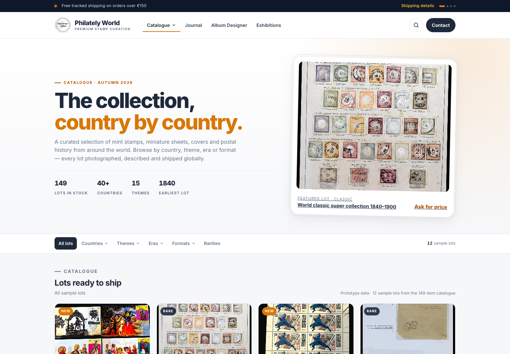

Prototype AGlobal minimal + local subnav
A calm, intent-based primary nav. The catalogue's countries, themes, eras and formats become a sticky collection index beneath the hero.
- Primary nav: Catalogue · Journal · Album Designer · Exhibitions
- Mega-menu with top countries and themes
- Page-level collection index: Countries / Themes / Eras / Formats
- Filter panels with live sample results
- Mobile: hamburger accordion + scrollable subnav